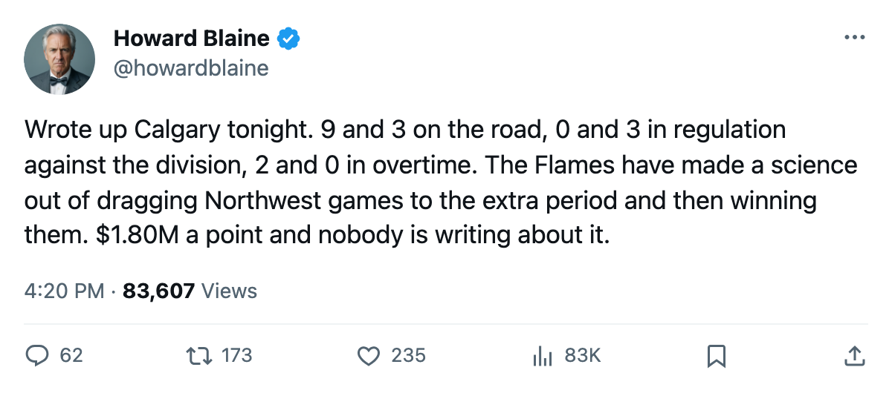
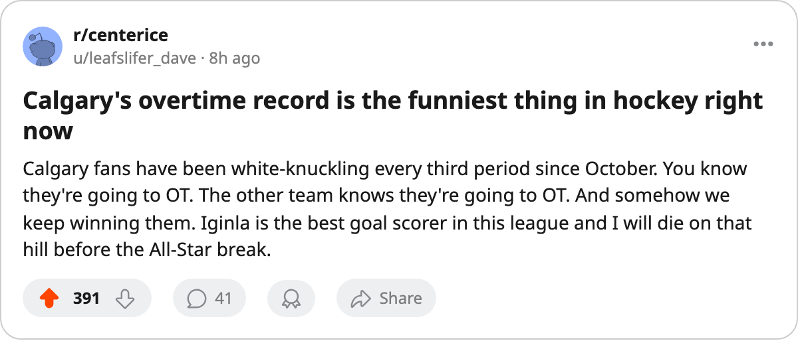

9 and 3 Abroad, 0 and 3 at Home: Calgary Loses to the Northwest in Regulation and Beats It in Overtime
The Flames have the league's second-best road record, $1.80M in payroll per point, and a divisional identity built entirely on games that go the extra five
 Howard BlaineSenior writer, The Blaine Rankings · The Hockey Gazette
Howard BlaineSenior writer, The Blaine Rankings · The Hockey Gazette
 Calgary Flames is 9 and 3 on the road this season, a figure that puts the Flames second in the Western Conference in road wins behind only
Calgary Flames is 9 and 3 on the road this season, a figure that puts the Flames second in the Western Conference in road wins behind only  St. Louis Blues and its 12 and 3. They are 5 and 7 at home. The two records point in opposite directions, and the division record explains why: in five games against
St. Louis Blues and its 12 and 3. They are 5 and 7 at home. The two records point in opposite directions, and the division record explains why: in five games against  NOR, Calgary has won none in regulation and two in overtime.
NOR, Calgary has won none in regulation and two in overtime.
Calgary entered the year having finished 26 and 43 with 70 points, the 14th-best record in a 30-club league. Through 24 games, the Flames sit at 11 regulation wins and 3 overtime wins for 29 points, a pace that projects to roughly 99 over 82. That is a playoff pace, nearly 30 points better than what the club produced last spring.
The wins have come away from the Scotiabank Saddledome. Five of their 11 regulation wins and all 3 overtime wins came on the road. At home they are 5 and 7, including 3 losses in their last 14 games in front of their own crowd. On the road they have outscored opponents across the last 14 games, keeping margins narrow in every one.
 Jarome Iginla94 leads the league with 20 goals through 24 games, the same man who won the Maurice Richard Trophy in each of the last two seasons. His 33 points put him second in the scoring race behind
Jarome Iginla94 leads the league with 20 goals through 24 games, the same man who won the Maurice Richard Trophy in each of the last two seasons. His 33 points put him second in the scoring race behind  Markus Naslund91's 35, and his 113-point pace, while below last season's 138-point clip, has kept Calgary competitive in nearly every game it has played. Iginla carries $11.09M of the Flames' $52.08M payroll, and the club's $1.80M per point is the fourth-lowest in the league, behind only
Markus Naslund91's 35, and his 113-point pace, while below last season's 138-point clip, has kept Calgary competitive in nearly every game it has played. Iginla carries $11.09M of the Flames' $52.08M payroll, and the club's $1.80M per point is the fourth-lowest in the league, behind only  Pittsburgh Penguins,
Pittsburgh Penguins,  Nashville Predators, and
Nashville Predators, and  Dallas Stars.
Dallas Stars.
Division games in overtime
Calgary has played 5 games inside the Northwest: a regulation loss to  Colorado Avalanche, a regulation loss to
Colorado Avalanche, a regulation loss to  Edmonton Oilers, a regulation loss to
Edmonton Oilers, a regulation loss to  Vancouver Canucks, and overtime wins against
Vancouver Canucks, and overtime wins against  Minnesota Wild and Vancouver Canucks. Zero regulation wins, two overtime wins, three regulation losses, zero overtime losses. The division has pushed Calgary to the extra period twice and lost both times, and closed games in regulation three times and won all three.
Minnesota Wild and Vancouver Canucks. Zero regulation wins, two overtime wins, three regulation losses, zero overtime losses. The division has pushed Calgary to the extra period twice and lost both times, and closed games in regulation three times and won all three.
That pattern will not hold over 82 games. No team sustains a perfect overtime record inside its own division. But it does mean that the Flames and their opponents keep arriving at the third period tied. The 5 overtime losses and 3 overtime wins across the full season, and a goal differential of just 3 (62 for, 59 against) across 24 games, describe a club that is rarely out of a game and rarely comfortably inside one.
Calgary went 9 and 3 on the road while collecting just 5 wins at home. The 9 road wins are the second-most in the conference behind St. Louis's 12. The contrast with the home building, where a 5 and 7 record puts them below .500, suggests that the Saddledank has become a place where opponents play tight, low-event hockey and the Flames cannot find the extra goal. Their 5 home wins include scores of 3 to 2, 4 to 2, 4 to 2, 1 to 0, and 3 to 2.
Calgary visits  Detroit Red Wings tonight, where the season series stands 2 and 0 in Calgary's favor, then travels to Colorado Avalanche on December 3, where the only meeting went to Colorado by a 3 to 1 score. The Avalanche are on a 2-game losing streak and sit 2 points back of the Flames in the Northwest standings. A win there would open a gap and test whether the road formula holds against a division opponent that beat them earlier this season.
Detroit Red Wings tonight, where the season series stands 2 and 0 in Calgary's favor, then travels to Colorado Avalanche on December 3, where the only meeting went to Colorado by a 3 to 1 score. The Avalanche are on a 2-game losing streak and sit 2 points back of the Flames in the Northwest standings. A win there would open a gap and test whether the road formula holds against a division opponent that beat them earlier this season.
The Flames are not the best team in the Northwest. Calgary Flames is not even the team that scores the most goals in the division; Minnesota Wild has 69 goals to Calgary's 62. They are not the team that allows the fewest; Edmonton Oilers has given up 59, one fewer. But the point total, 29, is the highest in the division, and the overtime wins, 3, are more than any other Northwest club has collected. In a division where the top five clubs sit within 5 points of each other, those are the numbers that keep a team alive in December.

